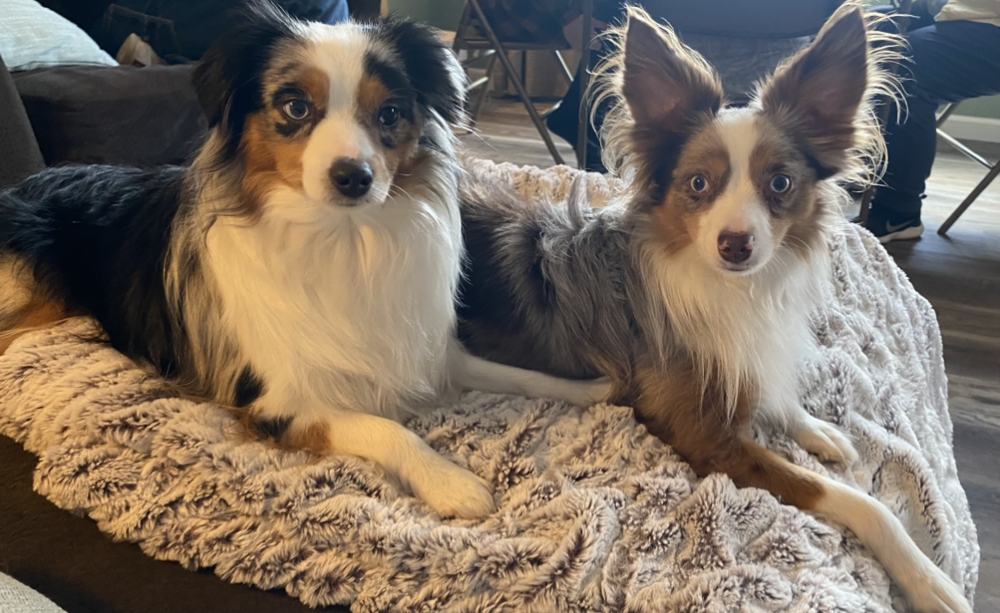
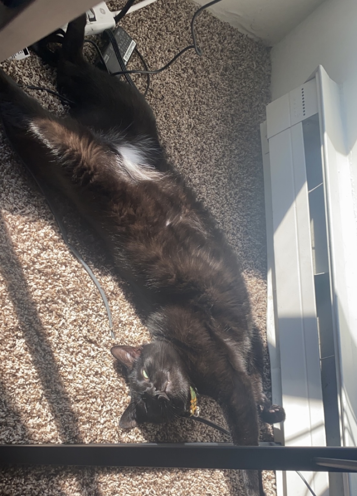
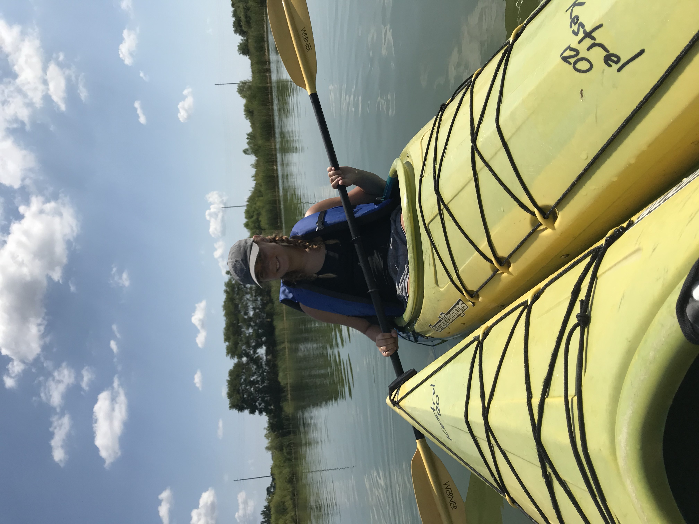
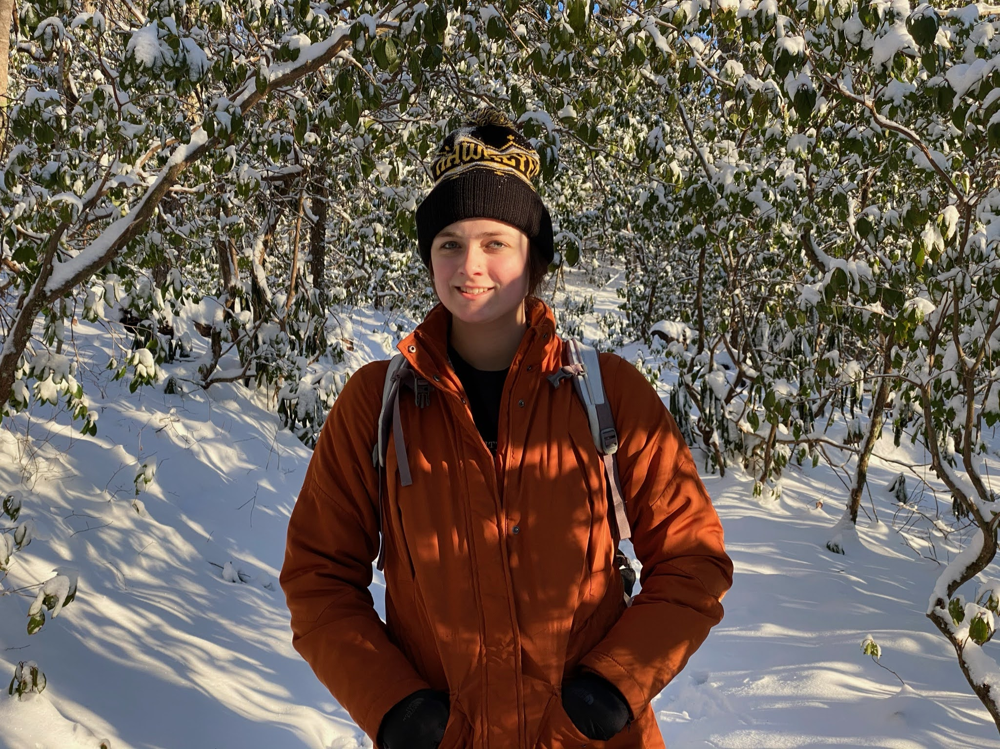
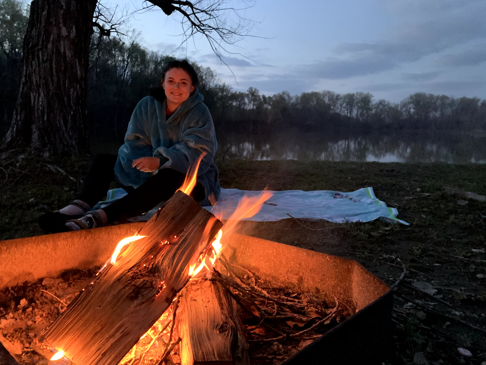
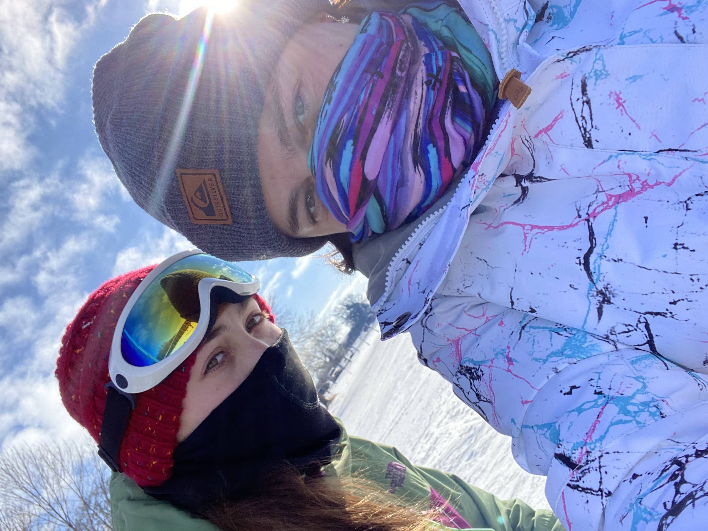

About Me
Pets
I love to spend time with my 3 pets! My 2 dogs, Kaiser and Ranger, are toy Aussies and full of energy. We spend a lot of time outside, even if it is just throwing a ball around. When I am not trying to burn off the puppy energy, I hang out with Popcorn, my cat.


Always Outdoors
 Whether it be when I am on vacation or staying at home, my favorite place to be is outside. Especially when the weather is nice, I like to be gardening, hiking, kyaking or reading in the hammock. Although its more difficult in the cold, I still try to find things to do, such as snowboarding.
 